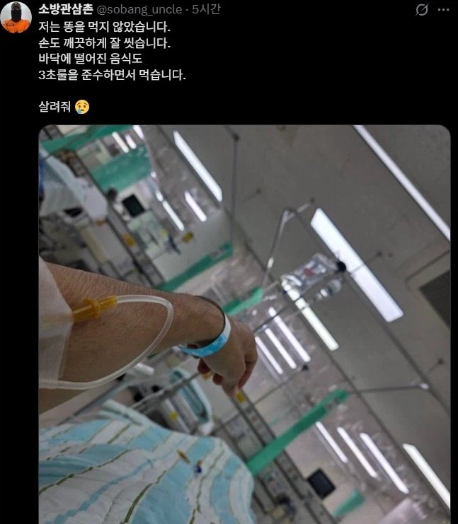

땅에 떨어진거 주워먹었나봄...

땅에 떨어진거 주워먹었나봄...
언제부터 똥을 먹지 않았다고 생각한거지?
굴 먹고 노로바이러스 걸렸나
김밥자셧나?

3.1초 컷인게 있나보네
키야 자기 몸 갈아서 3초룰은 잘못됐다고 알려주는 참교육센세
딱 아침에 덥고 밤에 추워서
식중독이나 노로 걸리기 좋은 계절 ㅋㅋ
이제 병상에 누워서 식품위생 관련 영상 찍겠지? 아니 사실 그러려고 앓아누웠나?
3초안에 먹긴 했구나
계란 만지고 꼭 손 씻어라 손세정제로
오 치킨림잡
3초 오바했네

뭐지? 정말 위생적으로 산거같은데? 참 신기한일이야
얼마전에 3초룰 의미없다지 않았나
그게 진짜 의미 있다고 생각하는 사람이 어딨어 ㅋㅋㅋ
언제부터가 빠졌잖아
3초룰이 문제네
‼️뿌우우우우우웅‼️♥️아자자자잣♥️엉덩이가‼️♥️‼️
3초룰이 문제다
3.1초에 먹었나보네
뭐야 해병소방관이었나
생굴 먹었나